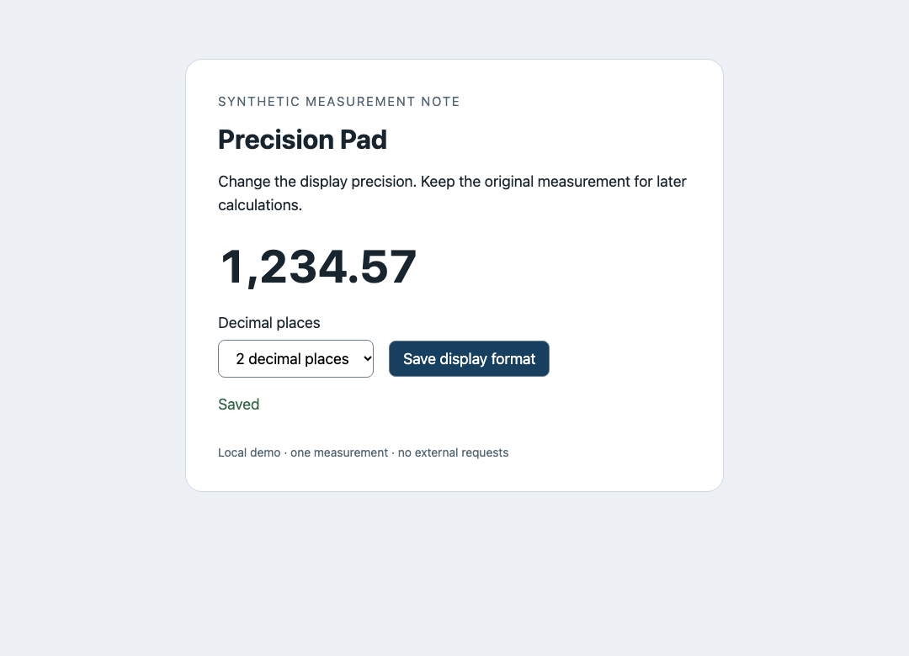

STATE LENS · RECORDED SYNTHETIC COMPARISON · NO SETUP TO VIEWSame screen.
Different saved data.
Change display precision from 3 decimal places to 2. Save. Reload.
Both app screens show 1,234.57. Did both preserve the original value?
Normal save

UI checks: passed
Authored regression
The same UI checks: passed
The two screenshots were captured independently and matched byte for byte at this viewport, after save and after reload. This page uses that shared image.
The format changed. One original value changed too.
Normal{ "value": 1234.567, "digits": 2 }Original-value assertion: passed Authored regression{ "value": 1234.57, "digits": 2 }Original-value assertion: failed after save and reload The intentionally broken save rounds the stored value, rather than changing display precision alone. This is an authored example, not a bug found in another developer's app.
See the steps beside their selected data
State Lens puts selected field differences and screenshots into one local HTML report. Open either recorded timeline and choose the save or reload checkpoint:
Standard Playwright catches this too. The same explicit saved-value assertions passed in the normal branch and failed in the regression branch, with and without State Lens. The helper organizes observations; it does not replace your assertions. A timeline action marked COMPLETED means its callback returned, not that the saved data is correct.
const saved = await page.evaluate(() =>
JSON.parse(localStorage.getItem('precision-pad-document')));
assert.equal(saved.value, 1234.567); // Keep this assertion.
Try it in your own Playwright test
Already use Playwright? Download the common experimental package, or copy its single module. Add checkpoints around your own save and reload actions; keep your existing assertions.